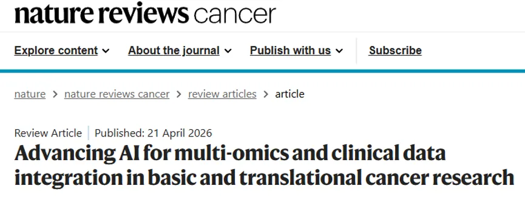
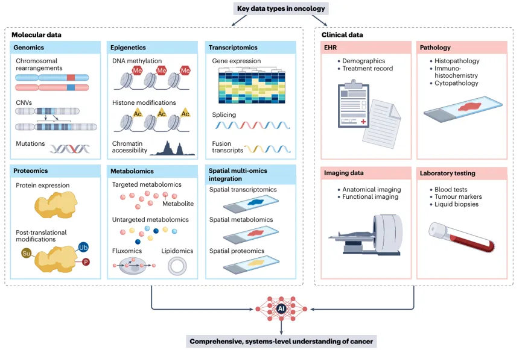
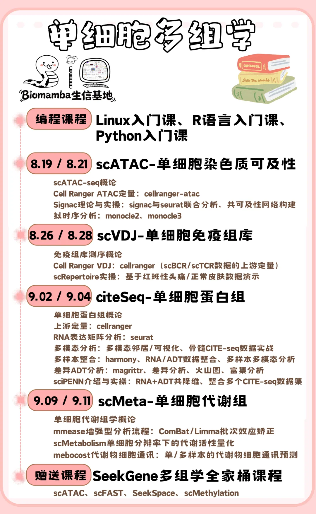
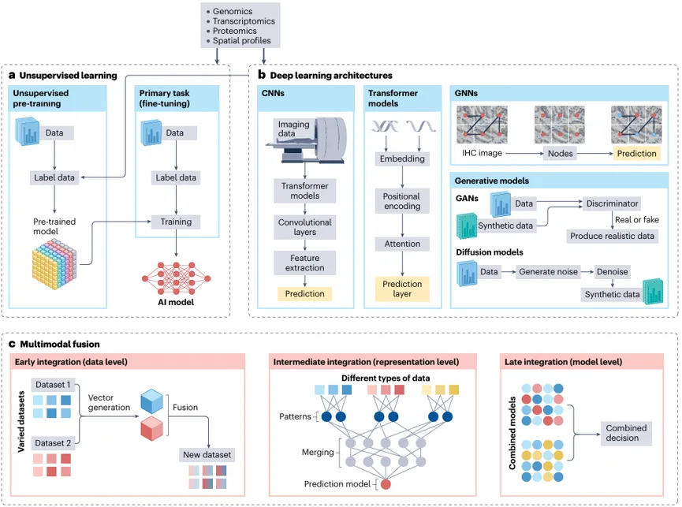
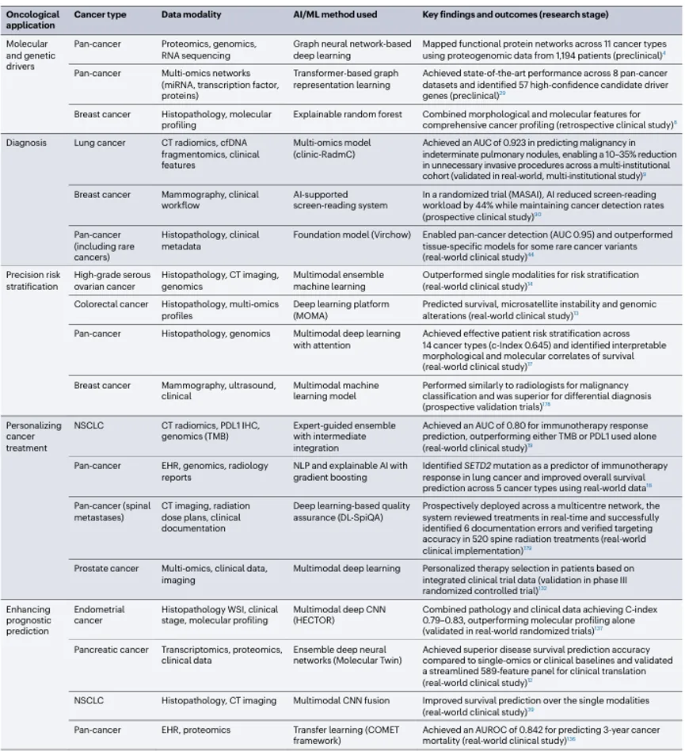
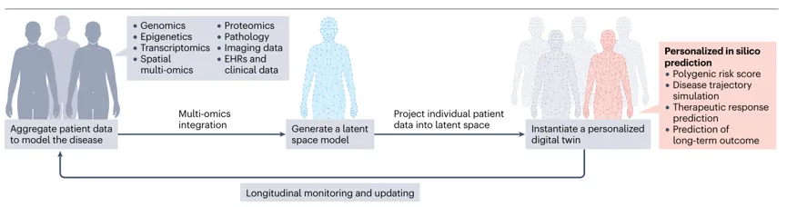
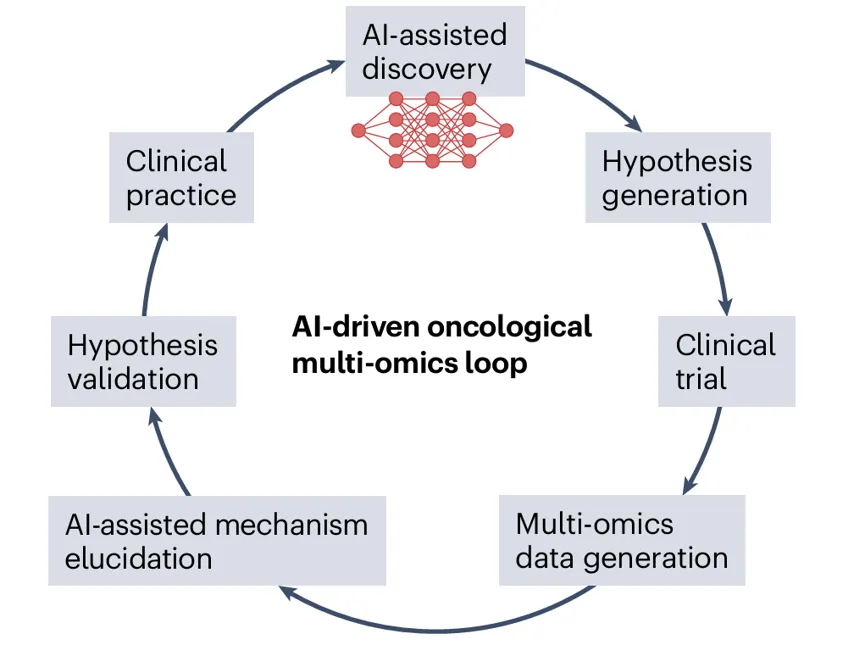
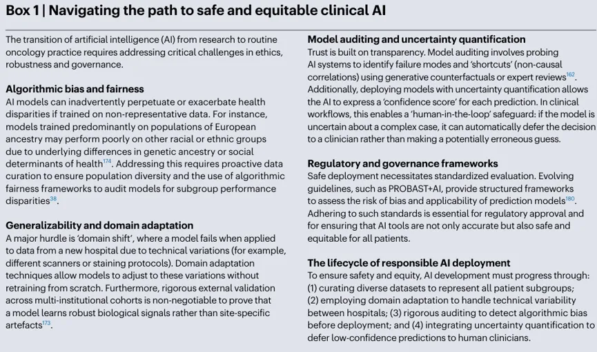

IF=60.7 综述：多组学×AI强强联合！重塑癌症精准诊疗新格局
原文：https://mp.weixin.qq.com/s?__biz=MzAwMzIzOTk5OQ==&mid=2247540979&idx=1&sn=9a8a7a245950b8c3462c24cb9f852e50&chksm=9b3c59a3ac4bd0b595287b5abacee434dc5c1d911e9f9836e31c626a57dc5fa93175909451ba#rd 合集：文献速递
一、写在前面
今天我们带来的文章是发表于《Nature reviews Cancer》（IF=60.7）的“Advancing AI for multi-omics and clinical data integration in basic and translational cancer research”，DOI:10.1038/s41568-026-00922-2

癌症在生物学多尺度层面存在广泛异质性，仅依靠单一组学检测手段获得的生物学信息存在局限性，甚至会产生误导。因此，目前的研究逐渐转向多组学整合策略（Fig.1），将基因组、表观组、转录组、蛋白组、代谢组等多组学数据，结合临床病历、医学影像等多模态信息，从系统层面完整解析肿瘤发生发展过程。但多组学数据集具备超高维度、数据类型异构的特点，传统统计学方法难以拟合其中复杂的非线性关联。

Fig.1
人工智能（尤其是深度学习）是解析这类复杂高维数据集的核心工具，在疾病早期筛查、患者精准分层、治疗响应预测、耐药机制解析等方向取得大量进展。但AI模型普遍存在 “黑箱” 缺陷，仅能输出预测结果，无法解释背后对应的生物学机制。可解释人工智能（XAI）能够解决该痛点：一方面建立临床与科研层面的可信度，另一方面产出可通过湿实验验证的全新生物学假说。
当前该领域仍存在数据获取难度大、模型跨队列泛化能力不足等现实难题；与此同时，领域正朝着患者专属数字孪生方向发展，该技术可模拟个体疾病发展轨迹、个体化优化治疗方案，推动精准肿瘤学迈入全新阶段。
当然，AI 时代的高效组学整合，依赖上游单细胞数据的准确解析和跨模态对齐。我们不仅要看宏观综述，还要扎扎实实掌握单细胞多组学的实操技能：

如果需要单细胞数据分析教学、生信热点全文复现、自测数据个性化分析辅导、实验科研服务和常态化实验学习，欢迎联系客服微信[Biomamba_zhushou]
二、主要内容
**1.**AI methodologies for multi-omics integration（多组学整合的人工智能方法学）
将海量的多组学数据转化为临床实用的工具，依赖于一个精细复杂的计算框架。AI的核心优势并非来自单一算法，而是对各类学习范式、专用模型架构、数据融合策略进行系统性组合调度（Fig.2）。掌握这些核心方法学组件，才能客观认知 AI 在肿瘤研究中的应用潜力与技术复杂度。

Fig.2
** **
1.1 Unsupervised learning（无监督学习）
医学 AI 落地的核心瓶颈之一，是带精准临床结局标签的标注数据集稀缺，难以从零完整训练深度学习模型。无监督学习是解决该问题的主流方案，核心为 “预训练 - 微调” 两阶段流程。
第一阶段预训练：基于海量无标注数据集（百万级病理切片、公共基因组序列库）完成基础训练，模型无需人工标注，通过完成图像修复、序列关联预测等辅助前置任务，自主学习细胞形态、保守基因序列等通用底层生物学特征，形成具备泛化表征能力的预训练模型。
第二阶段微调：采用规模更小、带有真实临床标签（患者生存期、药物治疗响应等）的数据集完成适配训练，预训练通常利用单模态或跨模态的无标注数据提取通用生物学表征；在下游微调阶段，再针对具体的临床任务或模态进行适配。
在多组学整合场景下，该范式可拆分执行：图像、基因组序列分别使用对应单模态大规模无标注数据独立预训练，得到专属 “专家编码器”；完成预训练后将多类编码器融合，在小规模完整多模态标注数据集上联合微调，挖掘不同数据模态间的跨模态关联。
这种将海量无标注数据与特定微调任务解耦的两阶段训练范式，直接催生了生物医学基础大模型（Foundation models），代表模型包含病理计算领域 Virchow、基因组领域 Evo。区别于仅适配单一任务的传统模型，基础大模型在海量数据集预训练后学习生物数据通用表征，支持零样本推理，同时针对标注样本稀少的肿瘤亚型实现高效微调。
更值得关注的是，多模态大模型近年来的突破正在打破壁垒，实现不同数据层间的“跨模态对齐”，将病理图像和基因序列映射到同一语义空间中。基于此，AI甚至能做到直接“看图写报告”，这标志着它正从一个被动的模式识别工具，向主动的、全面的临床辅助系统蜕变。
1.2 Deep learning architectures（深度学习架构）
多组学数据类型繁杂，不存在通用适配全部数据的 AI 模型；想要高效完成多组学整合，需要根据输入数据的形态匹配对应的深度学习架构（Fig.2b）。
（1）视觉 Transformer（ViT）
卷积神经网络（CNN）是传统医学图像分析工具，但仅擅长提取局部特征，对图像全局上下文的建模能力存在缺陷，因此视觉 Transformer（ViT）与混合架构成为当前主流发展方向。
Transformer 最初源于自然语言处理领域，因其强大的长距离序列依赖建模能力，被成功引入基因组序列解析与视觉分析（ViT）。CNN 仅聚焦局部感受，逐步拼接全局信息；ViT 结合弱监督多实例学习（Multiple Instance Learning, MIL）架构，将千兆像素全切片图像（WSI）切分为大量图块（Patches）并转化为特征序列，进而高效捕捉整张切片内肿瘤细胞与远端基质、免疫细胞的空间长距离依赖关系；在三维放射影像中，ViT 也可更好建模多层切片间的立体上下文。
注意力机制可类比为“计算聚光灯”，能够动态分配输入序列中不同元素的权重。例如在解析超长基因序列预测表达量时，注意力机制能够自动聚焦于启动子、增强子等核心功能调控区，而非全序列无差别计算，极大地提升了长距离生物学依赖关系的捕捉效率。这种捕捉长距离上下文关联的能力，让 Transformer 高度适配生物序列解析工作。
（2）图神经网络（GNN）
图神经网络专门用于处理具备网络、关联拓扑结构的生物数据，依托图结构挖掘生物实体间复杂相互作用，与 CNN 网格处理、标准 Transformer 序列处理的模式形成区分。
生物分子不会孤立发挥功能：基因存在调控通路、蛋白质可形成复合物。GNN 将基因、蛋白、细胞等生物实体定义为节点，实体间相互作用定义为边，显式建模生物网络关联。该架构广泛应用于基于蛋白 - 蛋白相互作用（PPI）网络的多组学整合、肿瘤驱动基因挖掘；同时也是空间组学数据分析的标准工具，可将肿瘤微环境抽象为细胞互作图，实现患者临床结局预测。
（3）生成式模型
生成对抗网络（GAN）、扩散模型等生成式模型是领域新兴前沿方向。常规预测类模型仅能基于已有数据完成预测，生成式模型可生成高保真全新合成数据，能够解决肿瘤研究中普遍存在的数据稀缺瓶颈。
多数罕见肿瘤亚型仅能收集数十例临床样本，样本规模不足以训练稳定 AI 模型；生成式模型可批量生成仿真虚拟患者样本扩充数据集，补齐缺失模态。
1.3 Multi-omics fusion（多组学融合）
不同 AI 架构完成单模态数据处理后，跨模态信息融合是决定模型性能的核心环节。融合策略的选择需要在模型简易度、稳健性、复杂生物关联挖掘能力三者之间做权衡（Fig.2c），主流分为三类融合方案：
（1）早期融合（数据级）
最直接的融合方式：将不同模态原始数据或预处理特征直接拼接为一维向量输入模型。例如将 100 维 CT 放射组学特征，与 20000 维转录组表达向量直接拼接。
缺陷十分突出：高维度模态会完全覆盖低维度模态的信息，海量基因表达特征会冲淡影像特征的有效信号，模型难以捕捉跨模态微弱关联。
（2）晚期融合（模型级）
属于集成学习策略，与早期融合思路相反：每种数据模态独立训练专属模型，最终将各模型输出结果加权整合。该方法实现简单、模型稳健性强。
但存在核心缺陷：无法捕捉跨模态协同效应。例如某类基因表达模式仅在特定肿瘤微环境病理形态下具备预后价值，晚期融合单独解析各类模态，无法识别这种上下文依赖的跨模态关联。
（3）中期融合（表征级）
当前深度学习多组学整合应用最广、效果最优的方案，核心优势是捕捉跨模态协同关联。操作流程：各类模态数据先通过专属编码器压缩为低维特征表征（Embedding）；如病理编码器提取免疫浸润特征、转录组编码器筛选免疫通路活性；各类模态压缩后的表征在模型隐藏层完成融合，让模型直接学习病理、基因特征间的非线性关联。举例：预测免疫治疗响应时，联合 “高免疫细胞密度病理特征” 与 “高干扰素 -γ 通路转录特征” 的模型，预测效果显著优于单一特征模型。
需要警惕的是，多模态融合不代表性能一定优于单模态，融合效果高度依赖不同模态数据的正交性（互补信息）；若模态信息高度冗余、某一模态噪音占比过高，强行融合会降低模型整体性能。
现有研究证实，多种肿瘤场景下，仅使用临床基础病历数据的生存期预测效果，优于基因组、蛋白质组模型；核心原因是组学高维数据引入大量噪音，掩盖临床记录中的有效信号。因此在样本量有限、数据异质性强的研究场景，经过精细调参的单模态模型，性能往往优于复杂多模态融合架构。这也提示我们在做 AI 多组学融合时，并非‘数据越多越好’，数据质量与模态间的互补性（信息冗余度）才是决定融合模型成败的关键。
2. AI-driven multi-omics insights for cancer care（AI驱动的癌症多组学解析见解）
在理清算法架构与融合策略的前提下，AI 整合多组学数据的优势得以在临床全流程中充分释放，正在深刻重塑癌症全程医疗各个关键环节的应对策略（Table 1）。

Table 1
2.1 Identifying underlying molecular and genetic drivers（识别潜在的分子与遗传驱动因素）
挖掘癌症的分子和遗传驱动因素，一直是肿瘤学面临的首要挑战，因为这些关键信息往往隐藏在庞大且高维的数据集里。
在直接解析基因组数据方面，AI展现出了极强的高维特征提取能力。例如，弱监督多实例学习（MIL）能够在不具备每个单突变标签的情况下，仅凭患者层面的整体标签，就精准地从肿瘤样本所有体细胞突变中，识别出肿瘤类型或微卫星不稳定状态。此外，研究者利用无监督深度学习方法（如 DeepProfile 框架），分析了超过 5 万个涵盖 18 种癌症类型的转录组数据，成功将特定的基因表达程序与基因突变负荷及患者生存期联系在一起，实现了从突变到功能后果的直观映射。
更进一步，AI正在通过解析驱动基因所处的“宏观环境”，架起分子变异与视觉表型、功能网络之间的桥梁。在视觉层面上，深度学习模型已经能够仅凭常规 H&E 染色切片，就高度准确地预测出关键驱动基因（如 EGFR、KRAS）的突变状态。而生成式AI框架（如 GigaTIME）更是能够从 H&E 切片中生成虚拟的空间蛋白质组数据，从而在群体规模上精准模拟肿瘤免疫微环境，发掘新的蛋白层面的驱动因素。在网络功能层面上，图深度学习模型（如 TREE 模型）通过将肿瘤建模为一个生物网络，整合 miRNA 表达、转录因子活性和蛋白质谱等多组学数据，并利用注意力机制锁定特定的信号通路链，从而在泛癌背景下精准鉴定出驱动基因。
总而言之，AI 通过同时整合表型层面的“视觉形态”与机制层面的“网络拓扑”，构建了完整的生物学上下文，能够挖掘出传统缺乏全局上下文感知的分析方法所无法发现的隐蔽驱动因素。
2.2 Detection and diagnosis（检测与诊断）
AI正在为癌症的预测性和无创性诊断提供全新的路径，核心手段包括对液体活检中循环标志物的深度分析，以及从医学影像中推断分子信息。凭借其捕捉微小高维模式的能力，AI能够发现传统分析方法无法察觉的线索。
（1）液体活检方向
DNA 片段组学是核心技术代表，工具 Fragle 最初用于结直肠癌循环肿瘤 DNA（ctDNA）片段长度分析，后续证实其预测肺癌术后微小残留病灶（MRD）的性能优于标准基因检测 panel。
早期肿瘤（I 期）ctDNA 信号微弱，单独液体活检灵敏度存在短板；多组学整合可弥补缺陷：将 CT 放射组学宏观肿瘤表型、ctDNA 微观分子信号融合，大幅提升早期检出性能。基于该思路的 AI 多癌种早筛（MCED）技术快速落地，PATHFINDER 前瞻性大样本试验证实：AI 驱动 MCED 检测在无症状人群中特异性超 99%，可检出多类肿瘤并精准判别原发组织位置。
除了基因组信号，AI 还致力于挖掘血浆蛋白和循环稀有细胞的诊断潜力。泛癌机器学习分类器分析 2251 例肿瘤患者血浆蛋白质组，筛选可区分肿瘤与健康人群的新型标志物组合；深度学习可全自动识别、分类高内涵成像内的循环肿瘤细胞（CTC），精度达到病理专家水平，为肿瘤转移提供细胞学证据。
（2）影像病理诊断方向
无监督多实例学习模型 DeepGEM 仅依靠常规 H&E 切片，即可实现肺癌 EGFR、KRAS 突变预测，AUC 可达 0.90–0.97；影像模型存在 “捷径学习” 风险（拟合无关虚假关联），引入基因组数据作为真值正则化，可强制模型学习具备真实生物学意义的形态特征。放射学领域，AI CT 影像组学特征已成功用于肺癌良恶性结节鉴别。
（3）多模态整合诊断实例
针对临床难以定性的肺结节，多机构联合开发 clinic-RadmC 整合模型，融合临床基线数据、深度学习 CT 影像组学、游离 DNA 5mC 富集区域片段组学三类特征；该整合模型鉴别结节良恶性 AUC 达到 0.923，全面优于任意单一组学模型，验证多组学整合在复杂临床诊断场景的优势
2.3 Precision risk stratification（精准风险分层）
有效的癌症管理高度依赖对患者进行精准的风险分层。虽然传统的肿瘤-淋巴结-转移（TNM）解剖学分期系统仍是基石，但无法体现肿瘤内在生物学异质性；同一 TNM 分期患者分子特征、临床预后差异极大，极易出现过度治疗或治疗不足。仅依靠转录组等单一组学分子分型，仍无法完整表征肿瘤复杂性。现有 AI 框架可整合临床、病理特征完成术前风险评估，但多组学显式融合分层仍有极大探索空间。
多模态整合框架同步超越解剖分期、单一组学分型：在分子数据基础上叠加病理组学、放射组学定量特征。胃癌预测模型证实，多模态整合方案治疗响应预测性能显著优于单纯临床基线指标；AI 可从全切片图像（WSI）批量提取核形态、组织纹理、细胞空间分布等定量形态特征，作为肿瘤内在生物学的替代标志物。
高级别浆液性卵巢癌多模态机器学习模型整合病理切片、CT 影像、基因组数据，风险分层性能全面优于单模态模型；该方案对高度依赖传统组织学分型的宫颈癌、膀胱癌具备极高应用价值。
精准风险分层带来的终极价值在于发现具有独特临床轨迹和潜在治疗脆弱性的新亚型。对临床医生而言，这意味着更具个性化的决策——既能精准定位高风险患者以便实施强化辅助治疗，又能在低风险患者中安全地推行“治疗降阶梯（De-escalation）”，避免过度治疗带来的药物毒性。从长远看，这种方法还有望提升经济效益并优化临床试验设计。尤其是在资源有限的医疗环境中，仅靠常规H&E染色切片即可推断分子风险的AI模型，有望以极具性价比的方式替代昂贵的基因组检测，成为风险分层的可靠新选择。
2.4 Personalized cancer treatment（个体化癌症治疗）
AI正为预测患者对复杂治疗方案（特别是免疫检查点抑制剂和靶向疗法）的响应提供强大的新模型，从而让治疗选择更精准、更个体化。
AI 模型可精准预测免疫检查点抑制剂、靶向药物等各类治疗方案的患者响应，实现个体化治疗选择。
（1）免疫治疗响应预测
临床常规标志物 PD-L1 表达、肿瘤突变负荷（TMB）预测效果有限；晚期非小细胞肺癌（NSCLC）回顾性研究采用中期融合策略，构建融合 CT 放射组学、PD-L1 免疫组化病理、基因组特征的多模态模型，免疫治疗响应预测 AUC=0.80，显著优于单独 TMB（AUC=0.61）、单独 PD-L1 评分（AUC=0.73），为免疫获益人群筛选提供工具。
（2）化疗个体化筛选
AI 依托肿瘤转录组构建化疗敏感性特征标志物；胰腺导管腺癌（PDAC）临床前研究开发 AI 转录组特征，预测吉西他滨、改良 FOLFIRINOX（mFFX）疗效，并在 343 例 III 期临床试验队列验证：预测对 mFFX 敏感人群中位无病生存期 50.0 个月；不敏感人群使用对应方案仅 10.6 个月。该策略依托 LASSO、随机森林等机器学习算法，从肿瘤细胞、微环境高维噪音中提取稳定药物响应特征，具备直接临床转化潜力。
（3）靶向治疗耐药机制解析
传统单基因标志物难以完整解释靶向耐药；可视化神经网络 NeST-VNN 分析乳腺癌细胞系基因组数据，构建多蛋白互作组装图谱，解析 CDK4/6 抑制剂耐药机制，识别 KAT6A、TBL1XR1 组蛋白调控复合体等 8 类核心驱动组装体。CDK4/6 抑制剂耐药由数十个基因的突变组合共同驱动，RB1 突变、CCND1 扩增等单一标志物临床转化效果差；AI 整合全局遗传信号为功能性互作状态，精准分层患者预后，为联合用药方案研发提供可验证方向。
2.5 Building predictive architectures for cancer prognosis（构建癌症预后的预测架构）
传统的癌症预后大多依赖于基于人群的“统计学平均值”，而AI的应用正在推动其向精准的、数据驱动的个体化预测科学转变。在结直肠癌、乳腺癌、前列腺癌等多种癌症中，基于AI的模型已成功以较高准确度（AUC 通常在 0.70 至 0.94 之间）预测了患者的个体化疾病轨迹。
这种卓越的性能来源于卷积神经网络（CNN） 从海量组织学数据集中提炼出人类专家肉眼难以察觉的“深层预后”信号。具体来说，这些算法已经识别出肿瘤相关脂肪表型、衰老核表型、肿瘤微环境免疫细胞空间分布等与生存期强相关的形态学生物标志物；基于病理的 AI 风险评估独立于传统肿瘤分期，优化临床决策；胸部放射影像组学特征同样可作为无创预后标志物。
然而，最强大的预测架构是多模态整合模型。通过融合分子数据（如基因组变异）与表型数据（如病理学、放射组学特征）以及临床变量，AI能够构建出肿瘤生物学的整体视图。这种整合方法在高度异质性的癌症中价值突出。例如，在一项针对切除后胰腺导管腺癌（PDAC）的研究中，被称为“分子孪生（Molecular Twin）”的精准医学平台，利用机器学习整合了数千个多组学特征（包含蛋白质组学）与临床数据。分析显示，尽管血浆蛋白谱是表现最好的单组学预测指标，但整合后的多模态模型仍实现了最高的预后精度，大幅超越了任何单一数据源。
最重要的是，这些架构并非一成不变。该类预测架构支持动态更新：随访新增 ctDNA 动态变化等纵向数据后，模型可迭代更新风险评估，适配患者长期全周期管理。
2.6 Proactive surveillance（主动式监测）
传统的治疗后监测一直是一个“被动响应”的过程，主要依赖定期的影像学检查来发现宏观复发，而此时往往已经错过了根治性干预的最佳窗口期。AI 驱动的纵向分子数据分析，正引领我们进入一个全新的“主动式监测”时代。
核心计算难点是如何从正常游离 DNA 背景噪音中区分极低丰度肿瘤 ctDNA 信号，为此，专用深度学习算法分析片段组学特征追踪 ctDNA 水平，检出灵敏度优于传统影像学手段。
临床价值：纵向 ctDNA 监测可在影像学确诊复发前数月识别疾病进展，在低肿瘤负荷阶段开展早期干预；结合临床特征的可解释 AI 模型可细化进展风险分层，精准筛选辅助治疗获益人群。
然而，单靠液体活检有其显著短板——无法获取肿瘤微环境空间信息，凸显多模态 AI 整合的必要性。结直肠癌专用 HIBRID 框架深度融合 H&E 病理深度学习风险评分、ctDNA 微小残留病灶（MRD）状态，得到关键结论：MRD 阴性、但病理 AI 判定高风险的患者，辅助化疗仍可显著获益；仅依靠 ctDNA 监测会完全遗漏该亚群。
从静态单源检测升级为动态 AI 多模态联合监测，是肿瘤长期精准管理的核心路径。
3. The oncological digital twin for personalized prediction（用于个体化预测的肿瘤数字孪生）
AI 多组学整合的最终落地形态，是为每位患者构建动态、可计算的虚拟副本，即数字孪生。该概念起源于工程领域（航空发动机虚拟仿真测试），现已迁移至肿瘤学研究。它绝不仅仅是单纯数据库，而是一个具备预测功能的计算模型，代表精准医学下一发展方向。LifeClock 模型整合百万级纵向电子健康记录（EHRs）构建全生命周期健康风险预测通用模型，验证数字孪生核心逻辑：从大规模人群数据学习通用生物规律，再适配单一个体独有生物学特征。
数字孪生搭建与应用分为三阶段（Fig.3）：
1. 预训练阶段：基于大规模多样化患者队列学习疾病通用表征；
2. 个体化建模：依托通用知识为单名患者构建专属模型；
3. 模拟预测：部署个体化模型完成计算机仿真、临床方案预判。

Fig.3
稳定数字孪生的基础是大规模、多样化患者队列数据集。流程第一步整合数千例患者高维多组学数据构建数字数据库，依托深度学习训练队列整体表征，将海量复杂生物学信息压缩为结构化潜在空间（Latent Space），可理解为多维疾病 “地图”，它捕捉了控制癌症生物学的基本规则和相互关联。
第二步依托深度表型（Deep phenotyping）构建个体专属数字孪生：将患者完整多组学数据（临床、基因组、病理、影像）映射至预训练潜在空间地图。该映射流程对数据完整性具有高容错率：依托预训练潜在空间中已学得的跨模态关联，模型可基于现有模态对缺失信息进行原位插补（In-silico Imputation，如从病理形态推导分子突变状态），即使在数据残缺场景下仍能稳定构建数字孪生。随后，AI 为患者分配潜在空间内唯一坐标，该坐标即深度表型，捕捉患者特有肿瘤状态（免疫激活水平、代谢特征等）。
数字孪生核心价值是动态仿真预测：作为功能性计算模型，可在计算机内模拟各类干预方案的远期结局，开展个体化虚拟临床试验，辅助医生筛选最优治疗策略。一个极具说服力的实例来自高危儿童肝肿瘤的临床前研究：研究人员整合了患者临床、遗传、转录组数据来构建数字孪生，模拟药物响应后锁定塞瑞替尼（ceritinib）全新治疗方案，该结论在患者来源异种移植（PDX）小鼠模型中得到验证。数字孪生不仅可预判标准疗法效果，还能挖掘非直观候选药物；通过计算机内多方案对比，锁定个体化最优治疗策略，推动肿瘤学从被动诊疗转向主动预测，实现真正个体化医疗。
4. The role of XAI（可解释人工智能的作用）
复杂 AI 多组学模型预测性能优异，但非线性内部结构形成 “黑箱”，决策逻辑无法直观解读。不可解释性严重阻碍临床转化：临床医师、监管机构需要确认模型预测依据真实生物学特征，而非技术伪影、虚假数据关联。可解释人工智能（XAI） 正是为此而生，它提供了一系列技术来揭开这些黑箱的运作逻辑。
（1）验证模型并建立信任
DNA 甲基化脑肿瘤分类器依托 XAI 解析决策依据，证实模型判断依赖增强子、大片段异染色质等具备功能意义的基因组区域，模型逻辑完全匹配表观遗传调控基础理论，扫清临床落地的信任障碍。
（2）驱动新生物学机制发现
除了验证已知理论，XAI 更能将预测模型转化为探索全新生物学机制的强大引擎。高精度模型依托意外跨模态特征完成预测时，对应特征可衍生全新、数据驱动的生物学假说。一个经典案例是，研究者构建了一个生物学知识驱动的神经网络，通过整合基因表达数据和已知的生物通路层级结构来预测前列腺癌的侵袭性。这个可解释的模型不仅成功预测了临床结局，还通过分析其内部机制，识别出 MDM4 和 FGFR1 等前所未有的治疗耐药分子驱动因素，并且这些发现随后在体外实验中得到成功验证。
这充分说明，XAI提供的绝不仅仅是从单一模态返回“重要基因列表”那么简单，它揭示了模型如何跨越从基因表达到通路激活的多个生物学尺度进行整合。这种能力预示着，AI不仅仅是一个简单的临床预测工具，更可以成为科学研究的“合作者”，帮助研究人员直接从模型中学习，发现新颖的系统级生物学洞见，从而深化我们对癌症本质的理解。
三、总结与展望
AI与多组学的深度融合，其价值远不止于提升预测精度，而是从底层重构肿瘤研究范式。未来将打造一个“AI驱动的肿瘤学多组学闭环”（Fig. 4），它打破了传统“从实验室到临床”的单向线性路径，转向了“数据发现→生成假设→临床验证→数据反馈”的持续循环。这种迭代将极大地加速临床实践与基础认知的共同进化。

Fig.4
然而，这一宏大愿景的落地仍面临多重现实挑战，主要集中在以下五个方面：
（一）数据获取与模型泛化瓶颈
训练公平、稳定 AI 模型需要大规模、高质量、种族多样化多组学数据集；但该类数据采集成本高、流程复杂；受实验平台、人群差异影响，模型跨医疗中心泛化性能不足。
（二）临床验证与监管框架滞后
目前，AI工具普遍缺乏严格的前瞻性临床验证，针对这类复杂模型的监管审批路径也才刚刚起步，这直接制约了其从实验室向临床的转化速度。
（三）算法安全与伦理偏见
AI 黑箱特性带来临床应用风险，必须依靠 XAI 核查模型是否存在种族、人群算法偏见，保证模型决策贴合真实生物学逻辑(Box 1)，保障应用安全、公平，符合医学伦理。

Box 1
（四）操作互操作性与经济成本
在操作层面，AI模型必须通过标准化协议（如FHIR标准）与医院现有的电子健康记录（EHR）系统无缝对接，不能扰乱临床工作流。在经济层面，全面的多组学检测和庞大的算力存储设施成本极高，需要严格的卫生经济学评估来支撑未来的医保报销。
（五）动态“自适应算法”的监管难题
区别于固定参数传统医疗器械，AI 部署后可持续迭代学习；监管机构需要配套全新审批机制（预设变更管控方案），在无需每次迭代重新全流程审批的前提下，持续监控模型性能衰减问题。
总结而言，尽管前路仍布满科学、伦理与操作层面的复杂障碍，但技术革新与跨学科协作正在坚定地推动癌症诊疗走向“预测性、个体化、主动性”的新时代。严谨的科学研究+规范化AI临床落地，将是兑现这一变革潜力的关键所在。
四、引用跟进
本篇 NR Cancer 综述 2026 年 4 月发表后，短短 3 个月内多篇 Cell、Nature Genetics、临床病理顶刊跟进研究，从落地模型、专科大模型、空间多组免疫、行业转化规范四大维度，对文中 AI 多模态整合、基础模型、XAI、数字孪生四大核心观点完成真实队列验证，形成理论 + 实证闭环。
（一）纵向多模态整合：Cell 同期大规模临床落地验证（Oncoformer）
配套重磅实证研究：Advancing cancer detection and treatment using longitudinal routine clinical data（Cell，2026.7，张康教授团队，与本文综述同系列研究产出）
综述提出「整合常规临床检验、影像做多模态动态疾病监测」的理论框架，该 Cell 论文开发 Oncoformer 多模态 Transformer 模型，仅依托普通血常规、胸片常规数据，可提前 1 年预测多种肿瘤发生，全局 AUC 达 0.869；大规模 367 万真实世界队列完整印证了低成本多模态数据融合的临床潜力。
该纵向时序多模态建模思路不局限肿瘤，慢性病、代谢病长期随访组学队列均可复用。
（二）病理基础模型：PulmoFoundation 专科化临床对照试验验证
文献：A Clinically Validated Foundation Model for Comprehensive Lung Pathology Interpretation（arXiv 预印本，2026.7）
原文核心观点：通用全景基础模型需结合细分领域数据持续微调，才能适配专科临床需求；PulmoFoundation 基于 Virchow 通用病理大模型做肺部专项预训练，完成 32 类临床任务验证，更开展 8 位病理医师交叉 RCT 对照试验：AI 辅助下诊断准确率提升 8.5%、阅片时长缩短 18.3%，直接证明细分领域基础模型的临床实用价值。
微生物、组织病理、植物表型领域均可参照 “通用大模型 + 领域微调” 方案搭建专属 AI 工具。
（三）空间转录组 + 可解释 AI：空间代谢免疫转化落地佐证
文献：Spatial metabolic heterogeneity shapes CD8+ T cell function in cancer（Current Opinion in Immunology，2026.7）
综述重点论述「空间多组学、XAI 助力免疫治疗机制挖掘」，该综述聚焦质谱空间代谢组，解析肿瘤空间代谢微环境如何调控CD8+T细胞浸润与免疫耐药；通过空间转录组 / 代谢 / 蛋白多模态整合，定位免疫抑制关键代谢特征，用可解释 AI 思路筛选免疫治疗新靶点，完整复现原文多组融合用于免疫机制挖掘的技术路线。
该空间多组学与可解释AI结合的范式，同样可移植至非肿瘤组织的微环境免疫代谢研究中。
（四）行业顶层共识：Nature Genetics 梳理多组学临床转化完整路径
文献：Mapping the path to clinical implementation of multi-omics（Nature Genetics，2026.7）
与本文综述末尾「临床落地挑战、数字孪生展望」高度呼应，共同指出当前多组学落地三大核心瓶颈：高维数据重复性风险、统一质控标准缺失、医疗系统数据互通壁垒；明确可解释 AI 是临床监管、结果审计的硬性要求，从行业宏观视角补足原文转化层面的讨论。
该转化路径框架同样适用于其他系统生物学多组学项目的标准化建设与合规落地。

欢迎交流

 留一个领取资料、开箱即用的单细胞分析镜像的助手[Biomamba_zhushou]，方便各位随时交流。同时我们也构建了交流群矩阵，欢迎大家一起讨论。
留一个领取资料、开箱即用的单细胞分析镜像的助手[Biomamba_zhushou]，方便各位随时交流。同时我们也构建了交流群矩阵，欢迎大家一起讨论。
 您点的每个赞和在看，我都认真当成了喜欢
您点的每个赞和在看，我都认真当成了喜欢